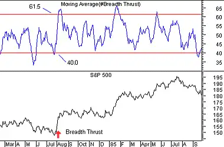

The Breadth Thrust indicator is a market momentum indicator. It was developed by Dr. Martin Zweig. The Breadth Thrust is calculated by dividing a 10-day exponential moving average of the number of advancing issues, by the number of advancing plus declining issues.
A "Breadth Thrust" occurs when, during a 10-day period, the Breadth Thrust indicator rises from below 40% to above 61.5%. A "Thrust" indicates that the stock market has rapidly changed from an oversold condition to one of strength, but has not yet become overbought.
According to Dr. Zweig, there have only been fourteen Breadth Thrusts since 1945. The average gain following these fourteen Thrusts was 24.6% in an average time-frame of eleven months. Dr. Zweig also points out that most bull markets begin with a Breadth Thrust.
The following chart shows the S&P 500 and the Breadth Thrust indicator.
 Horizontal lines are drawn on the Breadth Thrust indicator at 40.0% and 61.5%. Remember that a Thrust occurs when the indicator moves from below 40% to above 61.5% during a 10 day period.On December 18, 1984, I wrote the following comment regarding the Breadth Thrust indicator in a software manual:
"At the time this discussion on the Breadth Thrust is being written (12/18/84), the NYSE has gained only 1.6% since the 'Thrust.' If the market fails to go higher in the next six to twelve months, it will be the first false signal generated by the Breadth Thrust indicator in 39 years! With historical average gains of almost 25%, we feel the odds are in our favor when we go with the Thrust."
As shown in the example, the NYSE did in fact go higher in the ensuing months. Twelve months after the Thrust occurred the NYSE was up 21.6%. Twenty-one months after the Thrust occurred, the NYSE was up a whopping 51%. Trust the next thrust...